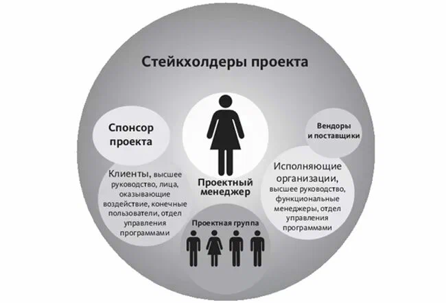
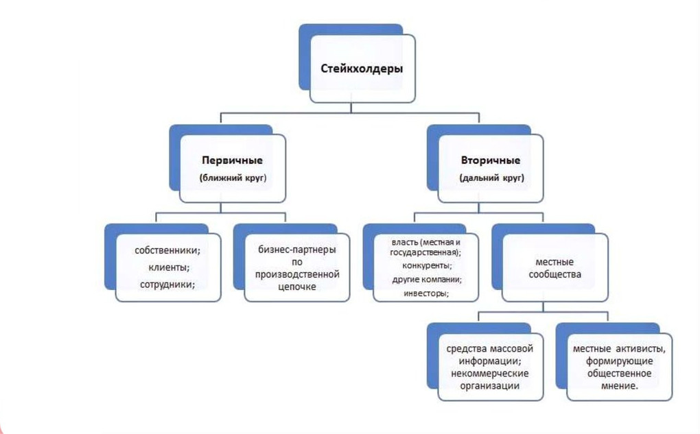
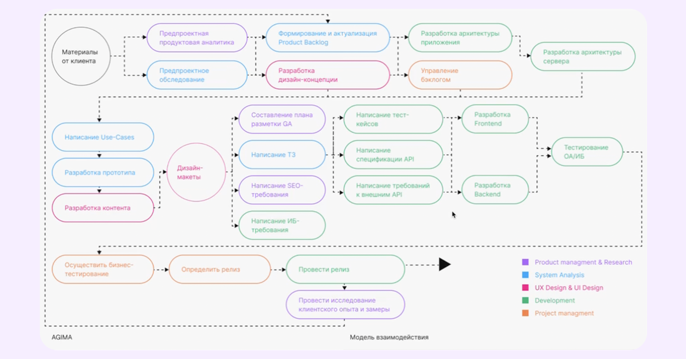
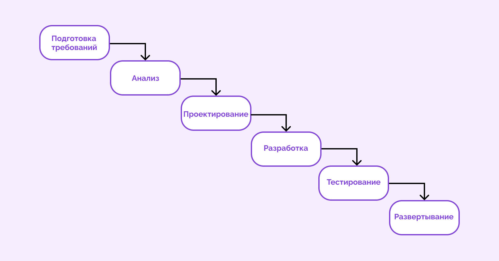
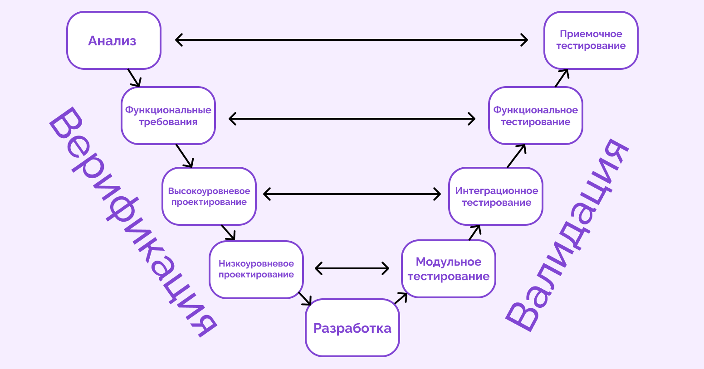
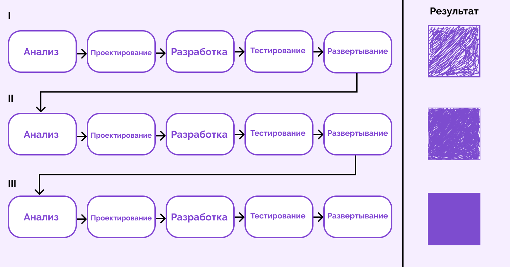
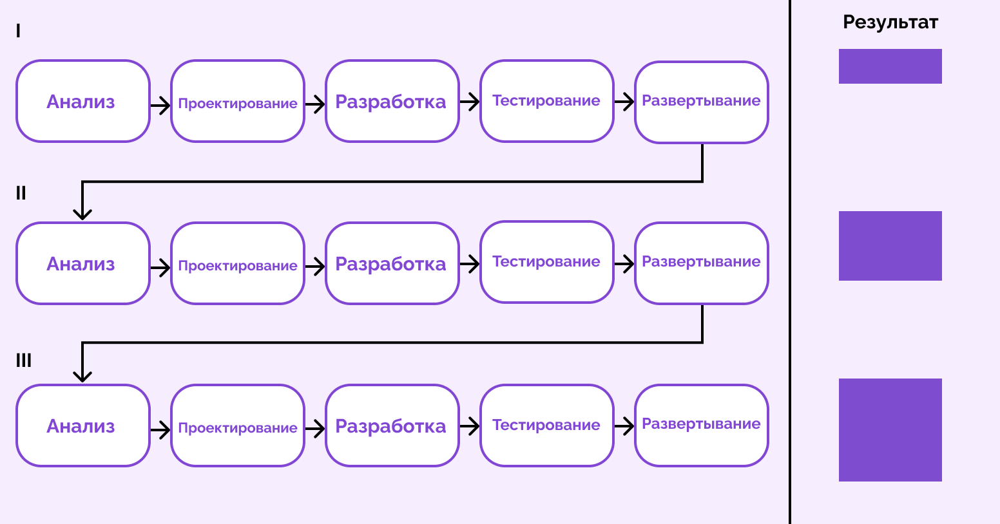

Структура взаимодействия узлов вычислительной машины Структура взаимодействия узлов вычислительной машины Структура взаимодействия узлов вычислительной машины Структура взаимодействия узлов вычислительной машины Структура взаимодействия узлов вычислительной машины Структура с общей шиной Структура с общей шиной Структура с общей шиной Структура с общей шиной Структура с общей шиной Структура с общей шиной Структура с общей шиной Структура с общей шиной Структура с общей шиной Структура с общей шиной
Языки высокого уровня
Свойства языков высокого уровня:
запись математических выражений в привычной для человека
алгебраической форме;
возможность конструировать новые типы данных;
создание собственных функций, библиотек;
возможностью использовать переменные с понятными человеку именами;
слабая зависимость от используемой вычислительной машины.
Свойства языков высокого уровня:
запись математических выражений в привычной для человека
алгебраической форме;
возможность конструировать новые типы данных;
создание собственных функций, библиотек;
возможностью использовать переменные с понятными человеку именами;
слабая зависимость от используемой вычислительной машины.
Свойства языков высокого уровня:
запись математических выражений в привычной для человека
алгебраической форме;
возможность конструировать новые типы данных;
создание собственных функций, библиотек;
возможностью использовать переменные с понятными человеку именами;
слабая зависимость от используемой вычислительной машины.
Свойства языков высокого уровня:
запись математических выражений в привычной для человека
алгебраической форме;
возможность конструировать новые типы данных;
создание собственных функций, библиотек;
возможностью использовать переменные с понятными человеку именами;
слабая зависимость от используемой вычислительной машины.
Свойства языков высокого уровня:
запись математических выражений в привычной для человека
алгебраической форме;
возможность конструировать новые типы данных;
создание собственных функций, библиотек;
возможностью использовать переменные с понятными человеку именами;
слабая зависимость от используемой вычислительной машины.
Свойства языков высокого уровня:
запись математических выражений в привычной для человека
алгебраической форме;
возможность конструировать новые типы данных;
создание собственных функций, библиотек;
возможностью использовать переменные с понятными человеку именами;
слабая зависимость от используемой вычислительной машины.
Функции языка высокого уровня:
средство общения с вычислительной машиной;
средство общения программистов между собой;
средство мышления;
средства обучения;
средства публикации.
Программная инженерия
необходимость нескольких разработчиков;
оценка программного продукта пользовательским требованиям;
сетификация и аттестация ПО;
необходимость нескольких разработчиков;
оценка программного продукта пользовательским требованиям;
сетификация и аттестация ПО;
Кроме написания работающей программы существует проблема оценки степени соответствия этой
программы
предъявляемым к ней требованиям. Тут необходимо проводить тестирование, которое не всегда будет
являться полным, но в конечном итоге должно привести к появлению качественного продукта, т.е.
программы, соответствующей ожиданиям.
необходимость нескольких разработчиков;
оценка программного продукта пользовательским требованиям;
сетификация и аттестация ПО;
необходимость нескольких разработчиков;
оценка программного продукта пользовательским требованиям;
сетификация и аттестация ПО;
Системы реального времени
СРВ — интервал времени, за который исходные данные должны быть обработаны и сформирован
результат, соизмерим со временем выполнения команд машины.
СРВ является то, что это встроенные системы, т.е. такая система входит в состав некой более общей
системы.
Стоимость программной ошибки многократно увеличивается.
Дефицит внешнего оборудования, ресурсов разработки и отладки.
Четко различается среда разработки программного обеспечения и среда выполнения программного кода.
Жизненный цикл ПО
Этапы SDLC
Планирование
Анализ требований
Проектирование
Разработка
Тестирование
Развёртывание
Поддержка и обслуживание
Методологии
Строгие модели
Гибкие модели
Стандарты
ISO/IEC 12207:2008
ГОСТ Р ИСО/МЭК 12207-2010
Инструменты
Инструменты управления требованиями
Средства планирования проектов
Системы управления задачами (таск-трекеры)
Системы контроля версий
Планирование и анализ требований
Описание задач продукта;
Опрос стейкхолдеров;
Выявление аудитории пользователей;
Оценка ресурсов;
Согласование критериев.
Участники этапа:
руководитель проекта
владелец продукта
заказчик
бизнес-аналитик
стейкхолдеры
Стейкхолдеры

Типы стейкхолдеров
Группы стейкхолдеров

Владелец продукта
Product Owner, PO — специалист, который отвечает за создание, развитие и управление продуктом
на всех этапах его жизненного цикла.
Определение требований
Оценка рисков;
Выбор методологии работы;
Описание пользовательских сценариев;
подготовка SRS;
подготовка ИСР.
Участники этапа:
руководитель проекта
владелец продукта
команда разработки
архитектор ПО
Проектирование
Архитектура системы:
верхнеуровневая
низкоуровневая
Верхнеуровневое проектирование
Основные компоненты системы — модули, сервисы или подсистемы
Принцип взаимодействия компонентов
Общая архитектура системы
Зависимость решения от других систем
Прототип интерфейса
Низкоуровневое проектирование
Принцип работы отдельных компонентов системы
Алгоритмы, структуры данных, логика работы внутри каждого модуля
Детали реализации — классы, методы или функции будут созданы
Взаимодействие с базами данных, API или другими внешними системами
Участники этапа:
архитектор
UX/UI-дизайнер
QA-инженер
команда разработки
UX-дизайн (User Experience — «пользовательский опыт») отвечает за то, как интерфейс
работает.
UI-дизайн (User Interface — «пользовательский интерфейс») отвечает за то, как интерфейс
выглядит.
QA-инженер (Quality Assurance engineer, инженер по обеспечению качества)
Архитектор ПО — отвечает за структуру и логику работы
IT-системы.
Разработка
Участники этапа:
Техлид
команда разработки
DevOps-инженер
QA-инженер
DevOps-инженер — специалист, который объединяет процессы разработки и эксплуатации программного
обеспечения.
Техлид — это роль, требующая сочетания технической компетентности, стратегического мышления
и лидерских способностей.
Тестирование
Участники этапа:
QA-инженеры
разработчики
автоматизаторы тестирования
потенциальные пользователи в случае User Acceptance Testing
Развертывание
Участники этапа:
DevOps-инженер
разработчики
руководитель проекта
Поддержка и сопровождение
Участники этапа:
DevOps-инженер
техническая поддержка
«Смерть» ПО
aрхивирование данных
уведомление пользователей
Участники этапа:
DevOps-инженер
техническая поддержка
Модели жизненного цикла ПО

Каскадная модель

Плюсы:
Низкий риск ошибок за счет детальной документации;
Прозрачность процессов для заказчика — он знает, сколько времени уйдет на каждый этап.
Полное документирование каждого этапа до начала разработки;
Минусы:
Перед стартом нужно подготовить обширную техническую документацию
Сложно учесть все требования до старта разработки
Нет гибкости — если появились новые требования на этапе разработке, то откатить работу назад
не получится
Заказчик видит результат в конце разработки — если итог его не устроит, придется начинать
сначала
Когда подходит:
Четкие, заранее известные требования
Работа ведется по строгим регламентам
V-образная модель

Верификация — проверка ПО соответстветствие правилам и требованиям в документации.
Валидация — проверка готового ПО на соответствие ожиданиям заказчика.
Плюсы:
Ошибки выявляют на ранних этапах
Четкая структура
Акцент на тестировании
Высокая степень анализа рисков
Минусы:
Такая же строгая, как и каскадная
Разработка обходится дорого
Когда подходит модель:
Есть четкие и заранее известные требования, которые не будут меняться во время разработки;
Работа должна идти по строгим регламентам;
Проект предполагает большое тестовое покрытие.
Итеративная модель

Каждая итерация проекта — это мини-проект.
Плюсы:
Возможность быстро выкатить ПО
Заказчик видит промежуточные результаты и может корректировать требования
Быстрая обратная связь от пользователей
Проще находить конфликты между требованиям
Минусы:
Могут возникнуть сложности с созданием рабочей архитектуры
Когда подходит модель:
Рабочее решение нужно в короткие сроки
Требования не до конца ясны и могут меняться в процессе работы
Проект очень большой, а ресурсов немного, поэтому приходится разбивать продукт на части и
делать его постепенно
Итеративная модель

Плюсы:
Минусы:
Когда подходит модель:
Спиральная модель
планирование
анализ рисков
разработка и тестирование
оценка и планирование следующего витка
Плюсы:
Риски находят на ранних этапах
Можно вносить изменения в проект по мере его развития
Подходит для крупных систем
Минусы:
Многочисленные циклы растягивают разработку и делают ее дороже
Каждое новое требование заказчика запускает новый виток
Когда подходит модель:
Пользователи сами не до конца понимают, что им нужно